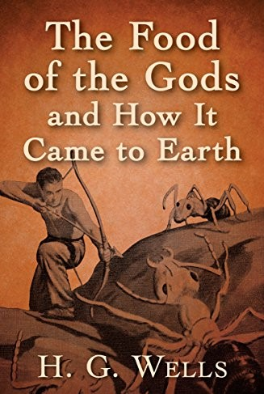

The Food of the Gods and How It Came to Earth
About the book:
Hoping to create a new growth agent for food with beneficial uses to mankind, two scientists find that the spread of the material is uncontrollable. Giant chickens, rats, and insects run amok, and children given the food